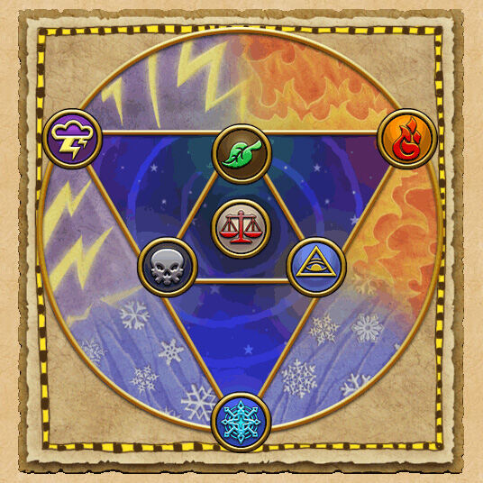

Gear
The Right Gear: One of the hardest things starting out in PvP is the need for good gear that enhances your stats to the greatest you can make them so you don't fall behind other players. The best gear to get for almost any school at level 59 is the gear dropped from Malistaire in Dragonspyre. From Malistaire you can get the Hat, Robe, Boots, and Wand and even in the same dungeon you can get from the other bosses the Athame, Amulet, and Ring that is best suited to your school.
